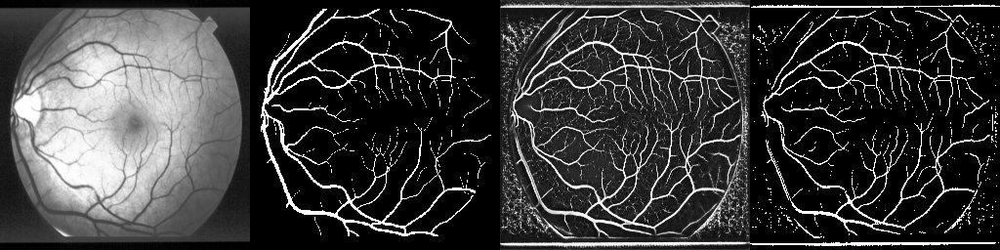

Results
One chart captures the paper

Read the result correctly
- STARE → HRF: baseline Dice is 0.2109, while Green+Equalize jumps to 0.5789. That is the biggest improvement in the whole paper.
- HRF → STARE: baseline Dice is 0.4016. Balanced loss improves it to 0.5101, but Green+Equalize reaches 0.5398 and the full recipe only slightly improves further to 0.5430.
- Main interpretation: the extra recipe components matter less than retinal-specific preprocessing.
+0.3680 Dice on STARE → HRF
+0.1414 Dice on HRF → STARE
Full recipe trades specificity for sensitivity
Dynamics
Training gets better faster, but not always cleaner

What the curves say
- On STARE → HRF, the full recipe improves early, but Green+Equalize keeps rising and eventually overtakes it.
- On HRF → STARE, all stronger variants beat the baseline quickly, which confirms that the baseline underuses the available signal.
- This supports a subtle point: more aggressive optimization can increase recall early, but it may also create noisier masks.
Best validation Dice: 0.7064 for HRF → STARE Green+Equalize
Transport gap still exists under domain shift
Robustness
Average Dice is not the whole story

Per-image interpretation
- On STARE → HRF, Green+Equalize dominates the full recipe almost everywhere and also has a better median Dice.
- On HRF → STARE, balanced loss has some strong easy-case results, but its lower tail is much worse. Hard samples collapse badly.
- That is why the paper argues for per-image logging and qualitative review, not just a single average score.
STARE → HRF median Dice: 0.5715 vs 0.5359
Balanced loss worst case: im0324 Dice 0.0566
Qualitative Cases
What the model improvement looks like

Case im0324: hard sample recovery
This case is one of the paper's clearest rescue examples. The preprocessing-heavy variants recover much more of the vessel tree than the baseline, which explains why preprocessing drives the lower-tail improvement.

Case im0077: aggressive recipe can over-segment
Some easier samples do not need the most aggressive operating point. The paper explicitly notes that higher sensitivity can create extra activations around main vessels.
Each composite image shows input, ground truth, probability map, and binary prediction
Best average model is not uniformly best image by image